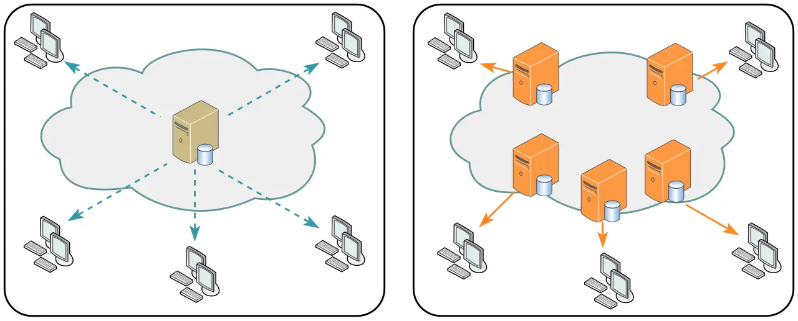

短答
CDN 保存响应的副本并用它们来应答。文档的 URL 仍然是你设为规范的那一个。
图画出了对照。左边，客户端到达一台源站。右边，客户端到达云里的多台服务器。两张图说的都是字节从哪里来。它们都不是延迟分数，本文也不编造分数。SEO 健康问的是客户端收到的副本是不是同一份文档：同一个 canonical、同一段主要文字、同一批链接。
定义
在边缘以不同方式组装的 HTML，例如按客户端地址把地区注进 H1，会造成与 canonical 不符的变体。静态资源搬到 CDN 上，比搬动文档的含义更安全。在你改了模板之后，边缘副本仍提供旧 canonical，这是缓存问题，不是新页面。清除缓存，或给资源 URL 加版本。不要为了躲开旧副本而发布第二份文档。
渲染对爬虫意味着什么变化
保持一份规范的 HTML 文档，并把 CDN 用作该响应或其资源的副本。
检查对规范 URL 的一次获取，如果可以，再检查一次由边缘提供的获取。主要文字应该一致。包含 cookie 的缓存键会把文档拆成私有副本。公开页面应该在没有会话时也可缓存。图中右边的云不是改变 H1 的许可。

要检查什么
- HTML 文档只有一个规范 URL
- 边缘副本保持同一段主要文字
- 公开 HTML 在没有会话 cookie 时被缓存
- 资源 URL 在变化时加版本或被清除
- 对一条产品 URL 的两次获取互相一致
一个结构示例
产品 HTML 在边缘缓存时把会话 cookie 放进了缓存键，于是有些客户端收到已登录的壳。修复是在没有 cookie 的情况下缓存公开 HTML，并让购物车请求不被缓存。对产品 URL 的两次获取一致。图里的服务器数量是画出来的，不是容量计划。
它不声称什么
使用 CDN 不保证排名或引用。
Mika Visibility 把它归到哪里
Mika Visibility 把渲染当作 SEO 健康问题：当模板依赖 JavaScript 时，重要 HTML 能否在有脚本和无脚本两种情况下被获取并比较。这种比较不是 GEO 审计，也不是市场覆盖计划。发现要附在样例 URL 上。模板改完之后的再审计，用来确认修复。
两张图显示响应可能从哪里来。它们不是测量。
常见问题
CDN 改变什么？
CDN 保存响应的副本并用它们来应答。文档的 URL 仍然是你设为规范的那一个。
HTML 里什么应该保持不变？
保持一份规范的 HTML 文档，并把 CDN 用作该响应或其资源的副本。
CDN 能保证排名吗？
使用 CDN 不保证排名或引用。
下一步
做一次结构化的 SEO + GEO 审计，查看健康发现、增长缺口和可以执行的蓝图。
更清晰的实体、答案、证据和上下文，会让页面更容易被理解与引用。任何回答产品中的结果都不作保证。